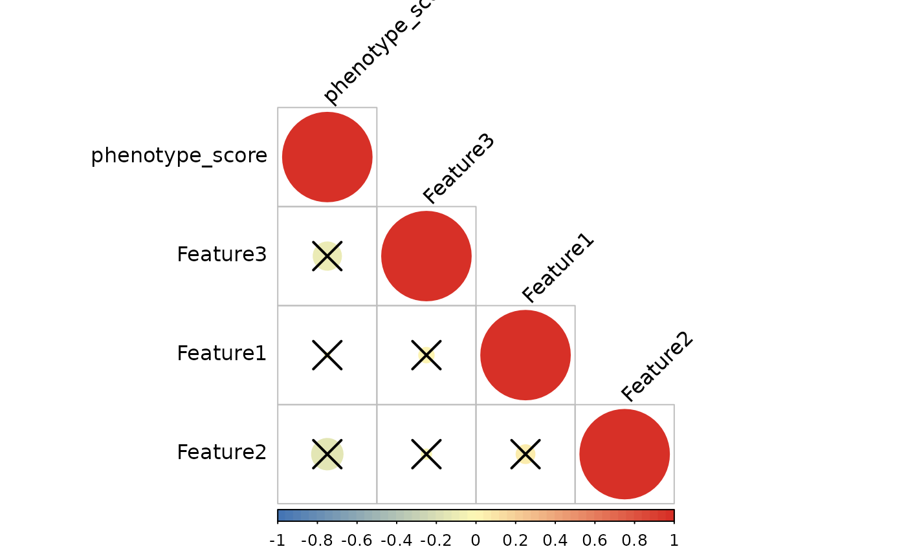

Integrative Correlation Analysis Between Phenotype and Features
Source:R/iobr_cor_plot.R
iobr_cor_plot.RdPerforms comprehensive correlation analysis between phenotype data and feature data, supporting both continuous and categorical phenotypes. Filters features based on statistical significance and generates publication-ready visualizations including box plots, heatmaps, and correlation plots.
Usage
iobr_cor_plot(
pdata_group,
id1 = "ID",
feature_data,
id2 = "ID",
target = NULL,
group = "group3",
is_target_continuous = TRUE,
padj_cutoff = 1,
index = 1,
category = "signature",
signature_group = NULL,
ProjectID = "TCGA",
palette_box = "nrc",
cols_box = NULL,
palette_corplot = "pheatmap",
palette_heatmap = 2,
feature_limit = 26,
character_limit = 60,
show_heatmap_col_name = FALSE,
show_col = FALSE,
show_plot = FALSE,
path = NULL,
discrete_x = 20,
discrete_width = 20,
show_palettes = FALSE,
fig.type = "pdf"
)Arguments
- pdata_group
Data frame containing phenotype data with an identifier column.
- id1
Character string specifying the column name in `pdata_group` serving as the sample identifier. Default is `"ID"`.
- feature_data
Data frame containing feature data with corresponding identifiers.
- id2
Character string specifying the column name in `feature_data` serving as the sample identifier. Default is `"ID"`.
- target
Character string specifying the target variable column name for continuous analysis. Default is `NULL`.
- group
Character string specifying the grouping variable name for categorical analysis. Default is `"group3"`.
- is_target_continuous
Logical indicating whether the target variable is continuous, which affects grouping strategy. Default is `TRUE`.
- padj_cutoff
Numeric value specifying the adjusted p-value cutoff for filtering features. Default is `1`.
- index
Numeric index used for ordering output file names. Default is `1`.
- category
Character string specifying the data category: `"signature"` or `"gene"`.
- signature_group
List specifying the grouping variable for signatures. Options include `"sig_group"` for signature grouping or `"signature_collection"`/`"signature_tme"` for gene grouping.
- ProjectID
Character string specifying the project identifier for file naming.
- palette_box
Character string or integer specifying the color palette for box plots. Default is `"nrc"`.
- cols_box
Character vector of specific colors for box plots. Default is `NULL`.
- palette_corplot
Character string or integer specifying the color palette for correlation plots. Default is `"pheatmap"`.
- palette_heatmap
Integer specifying the color palette index for heatmaps. Default is `2`.
- feature_limit
Integer specifying the maximum number of features to display. Default is `26`.
- character_limit
Integer specifying the maximum number of characters for variable labels. Default is `60`.
- show_heatmap_col_name
Logical indicating whether to display column names on heatmaps. Default is `FALSE`.
- show_col
Logical indicating whether to display color codes for palettes. Default is `FALSE`.
- show_plot
Logical indicating whether to display plots. Default is `FALSE`.
- path
Character string specifying the directory path for saving output files. Default is `NULL`.
- discrete_x
Numeric threshold for character length beyond which labels are discretized. Default is `20`.
- discrete_width
Numeric value specifying the width for label wrapping in plots. Default is `20`.
- show_palettes
Logical indicating whether to display color palettes. Default is `FALSE`.
- fig.type
Character string specifying the format for saving figures (`"pdf"`, `"png"`, etc.). Default is `"pdf"`.
Value
Depending on configuration, returns ggplot2 objects (box plots, heatmaps, correlation plots) and/or a data frame containing statistical analysis results.
Examples
set.seed(123)
pdata_group <- data.frame(
ID = 1:100,
phenotype_score = rnorm(100)
)
feature_data <- data.frame(
ID = 1:100,
Feature1 = rnorm(100),
Feature2 = rnorm(100),
Feature3 = rnorm(100)
)
sig_group_example <- list(
signature = c("Feature1", "Feature2", "Feature3")
)
results <- iobr_cor_plot(
pdata_group = pdata_group,
feature_data = feature_data,
id1 = "ID",
id2 = "ID",
target = "phenotype_score",
is_target_continuous = TRUE,
category = "signature",
signature_group = sig_group_example,
show_plot = FALSE,
path = tempdir()
)
#> ℹ Processing signature: "signature"
#> tidyHeatmap says: (once per session) from release 1.7.0 the scaling is set to "none" by default. Please use scale = "row", "column" or "both" to apply scaling
#> tidyHeatmap says: If you use tidyHeatmap for scientific research, please cite: Mangiola, S. and Papenfuss, A.T., 2020. 'tidyHeatmap: an R package for modular heatmap production based on tidy principles.' Journal of Open Source Software. doi:10.21105/joss.02472.
#> This message is displayed once per session.
#> Warning: `when()` was deprecated in purrr 1.0.0.
#> ℹ Please use `if` instead.
#> ℹ The deprecated feature was likely used in the tidyHeatmap package.
#> Please report the issue at
#> <https://github.com/stemangiola/tidyHeatmap/issues>.
#> ℹ Heatmap3 palettes: pheatmap, peach, blues, virids, reds, normal

#> ℹ Computing spearman correlation for 3 features
#> ✔ Correlation analysis complete
print(results)
#> # A tibble: 3 × 6
#> sig_names p.value statistic p.adj log10pvalue stars
#> <chr> <dbl> <dbl> <dbl> <dbl> <fct>
#> 1 Feature2 0.225 -0.122 0.493 0.647 "+"
#> 2 Feature3 0.328 -0.0987 0.493 0.484 "+"
#> 3 Feature1 0.969 0.00390 0.969 0.0136 ""